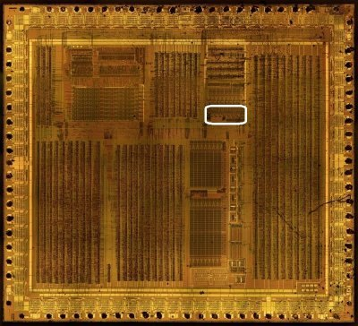
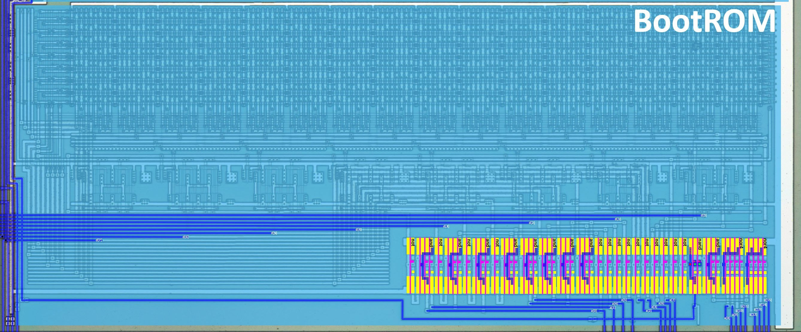

Boot ROM


Signals
| Signal | Dir | From/Where To | Description |
|---|---|---|---|
| [15:0] a | Input | From Core | SoC internal address bus (full 16 bits) |
| [7:0] d | Bidir | Global | SoC internal data bus |
| from_g1_YULA | Input | From g1 (Arb) | Boot ROM read enable: active when the BootROM is selected (boot_sel), the SoC reads (soc_rd) and Test2 (ROMDIS) is not set |
The BootROM is enabled only while the CPU is fetching from the IPL area (address $0000-$00FF), i.e. before the $FF50 register is written. The from_g1_YULA signal is produced by a small gate (g1) in the top level of the chip, combining boot_sel, soc_rd and !test_2.
Mask (Revision A)
11101011 11110010 11001011 00110010 01100011 01111100 00100001 01110010 11100000 00110011 11000100 10010010 11000100 00101111 00011011 00001000
01111111 01110011 01111111 01100011 00101011 01001111 00000110 10101011 00110011 11110011 00101011 10110000 00111000 00101110 11010110 11101111
00110111 11011011 01110111 11010111 01100110 10010111 01111111 11011010 01110001 01110010 01011000 01010111 01110001 11110111 01111011 11011000
01101111 11100011 11101110 11110110 00101110 01010110 10100010 00111000 01111000 00111010 01111100 01110011 00101111 01000011 01001111 11101001
10110001 00110000 10111001 10110111 00011001 11011001 11100000 11110011 11110110 10110001 11111110 01110110 10111010 00011010 01000011 00010011
01101110 01110011 01101001 00110111 01110011 01011010 01001111 11110011 00101111 10100011 00111001 10100111 01111010 00011110 01110010 10110010
01011100 01110111 11111100 01110111 10110000 01011011 00111000 01110001 00110000 11110101 00110000 10111110 00110000 10011001 01110111 11010010
10110101 11010111 10111010 01011111 00111010 11111010 00010101 11110001 11010111 11000011 11101011 10101011 00001110 01111001 10110111 11000101
00011111 00010100 00011011 10011110 10111100 11110000 11111011 01110000 01000110 11010000 11010011 10011001 00110011 11010100 01011011 10110110
11011001 00010110 01111001 00011011 00111001 01010101 00001101 11110111 01100101 10000111 01010110 11011110 10101100 10110010 11011111 10010111
11111111 11111001 11111011 01010101 00110111 11010000 10100110 10101001 10110100 11111001 10110100 11010101 10101010 01010101 11100101 10100011
01011110 11111010 00011110 11010110 00100001 11010000 00111011 00101110 01010011 11101110 10011011 00001010 00101011 10000100 00011110 00100001
11011000 10001011 10111100 10010101 00101100 01110000 10011000 11111000 11110110 11000000 10011100 11010100 10001100 11110110 00101001 10111001
11111011 00101001 11111010 00111101 00110010 11111001 10110101 01111101 10111101 10000101 00101100 11010001 00110111 00110101 11101101 10001010
00111111 11110110 00111011 11110010 00101100 11110100 00011111 10111101 00110111 11110111 00110111 01110101 01011111 11111011 01010111 00111111
10101101 11110111 10001101 11110110 10000101 01111001 11001101 10111010 01001111 11000011 01111010 10100011 01011100 10001111 11001111 10011111
Mask (Revision B)
11101011 11110010 11001011 00110010 01100011 01111100 00100001 01110010 11100000 00110011 11000100 10010010 11000100 00101111 00011011 00001000
01111111 01110011 01111111 01100011 00101011 01001111 00000110 10101011 00110011 11110011 00101011 10110000 00111000 00101110 11010110 11101111
00110111 11011011 01110111 11010111 01100110 10010111 01111111 11011010 01110001 01110010 01011000 01010111 01110001 11110111 01111011 11011000
01101111 11100011 11101110 11110110 00101110 01010110 10100010 00111000 01111000 00111010 01111100 01110011 00101111 01000011 01001111 11101001
10110001 00110000 10111001 10110111 00011001 11011001 11100000 11110011 11110110 10110001 11111110 01110110 10111010 00011010 01000011 00010011
01101110 01110011 01101001 00110111 01110011 01011010 01001111 11110011 00101111 10100011 00111001 10100111 01111010 00011110 01110010 10110010
01011100 01110111 11111100 01110111 10110000 01011011 00111000 01110001 00110000 11110101 00110000 10111110 00110000 10011001 01110111 11010010
10110101 11010111 10111010 01011111 00111010 11111010 00010101 11110001 11010111 11000011 11101011 10101011 00001110 01111001 10110111 11000101
00011111 00010100 00011011 10011110 10111100 11110000 11111011 01110000 01000110 11010000 11010011 10011001 00110011 11010100 01011011 10110110
11011001 00010110 01111001 00011011 00111001 01010101 00001101 11110111 01100101 10000111 01010110 11011110 10101100 10110010 11011111 10010111
11111111 11111001 11111011 01010101 00110111 11010000 10100110 10101001 10110100 11111001 10110100 11010101 10101010 01010101 11100101 10100011
01011110 11111010 00011110 11010110 00100001 11010000 00111011 00101110 01010011 11101110 10011011 00001010 00101011 10000100 00011110 00100001
11011000 10001011 10111100 10010101 00101100 01110000 10011000 11111000 11110110 11000000 10011100 11010100 10001100 11110110 00101001 10111001
11111011 00101001 11111010 00111101 00110010 11111001 10110101 01111101 10111101 10000101 00101100 11010001 00110111 00110101 11101101 10001010
00111111 11110110 00111011 11110010 00101100 11110100 00011111 10111101 00110111 11110111 00110111 01110101 01011111 11111011 01010111 00111111
10101101 11110111 10001101 11110110 10000101 01111001 11001101 10111010 01001111 11000011 01111010 10100011 01011100 10001111 11001111 10011111